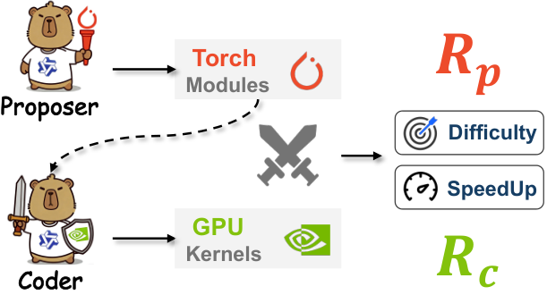
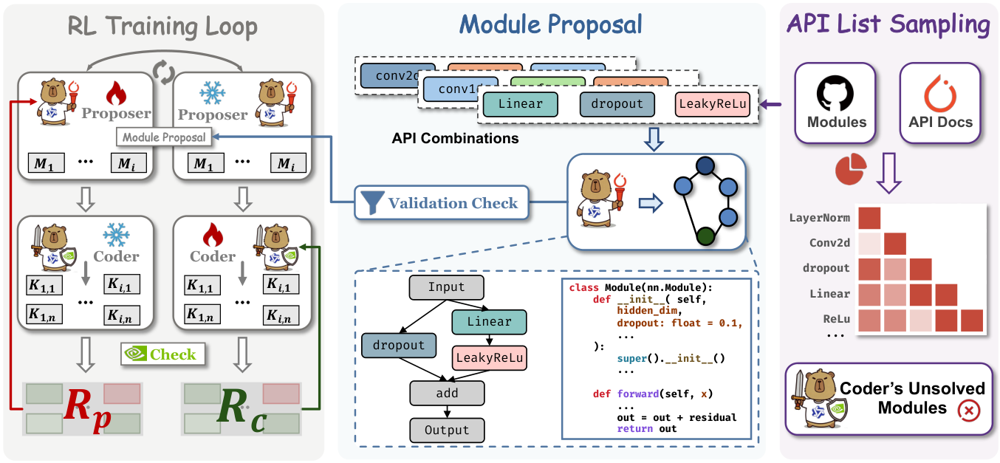
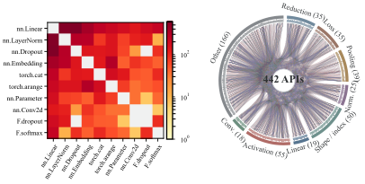
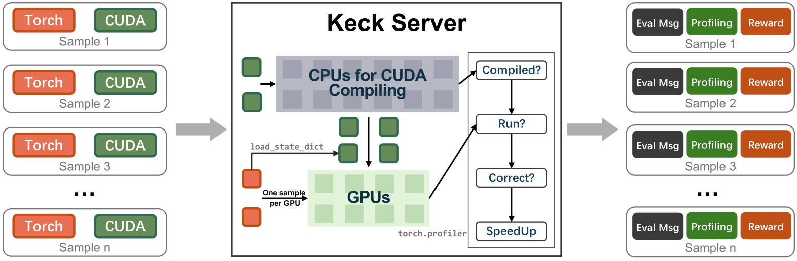
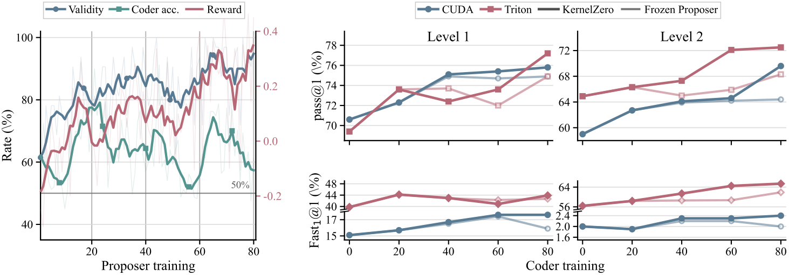
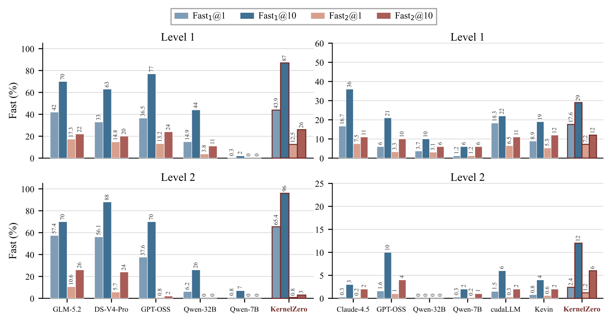

用大模型写GPU内核有两个老大难：高质量训练数据稀缺，而且数据还得跟模型当前能力对上号；正确性和性能天然打架，优化速度容易把正确性搞崩。
KernelZero的解法是养两个模型：Proposer负责出题，生成Torch算子组合；Coder负责做题，把题目翻译成CUDA或Triton内核。两者交替训练，互相抬轿子。
框架很直白：Proposer输入一组Torch API，生成可运行的Torch模块；Coder把模块翻译成底层内核。两个模型各有各的奖励函数，r_P奖励出题质量，r_C奖励做题质量，交替用GRPO优化，另一个固定不动。

关键在“出题”的方向：Proposer不随机出题，而是瞄着Coder当前的短板出。Coder哪类算子写不好，Proposer就多生成这类模块，形成自动课程。这种targeted的训练方式比大水漫灌高效得多。
交替优化带来稳定协同进化：Proposer把题目分布推向Coder的能力边界，Coder在新题目上练出更强的内核生成能力，反过来又逼Proposer出更难的题。循环一旦转起来，能力就持续往上走。

好题目有三个标准：真实、多样、卡在能力边界上。为保真实，Proposer先从真实Torch模块里统计API共现分布，再按这个分布采样API组合，避免编出没人写的怪异组合。
采样之后还有两道关：合法性校验保证模块能跑起来；前沿奖励鼓励生成Coder当前做不好的题目。难度不是拍脑袋定的，而是用Coder的实际表现标出来的。

这套机制解决的是数据与能力错位：静态数据集要么太简单（学不到东西），要么太难（直接训崩）。动态出题让每批数据都落在“跳一跳能够到”的区间，训练效率自然高。
Coder的目标是把Torch模块翻译成又快又对的内核。正确性和性能的矛盾用CA-GRPO解：正确率没达标之前，奖励只看对不对；正确率稳定之后，才开始奖励加速比。两步走，避免为了快把对搞丢。
强化学习之前先做冷启动蒸馏，把四条编译器级别的优化原则灌进去：分块（tiling）把数据切到片上内存、融合、向量化访存、规约优化。这些是专家写高性能内核的通用套路，先内化再强化。
奖励信号来自真实执行，不是模型自评。每个候选内核都要编译、运行、测速，跑分是唯一的裁判，杜绝纸上谈兵的“看起来快”。
Keck是配套的执行验证服务器：左边收进来一批Torch+CUDA样本，中间调度CPU编译、GPU运行，右边输出三样东西：评估信息、性能剖析、奖励分数。
流程是四连问：能编译吗？能跑吗？结果对吗？加速比多少？ 任何一关不过，样本就带着失败信息回去。这种细粒度反馈让Coder知道到底错在哪，而不是只拿到一个0分。

规模化是关键：训练中要评估海量候选内核，Keck把“一次采样多GPU并行”做成标准动作，每个GPU跑一个样本，吞吐量撑得起RL训练的消耗。
训练曲线印证了协同进化的设想：Proposer训练过程中，题目有效性、Coder正确率、奖励三条线一起往上走，说明出的题越来越有质量，Coder也越来越接得住。
Coder侧分Level 1和Level 2看，pass@1稳步爬升，KernelZero线（深色）始终压着CUDA、Triton、Frozen Proposer几条基线。Proposer持续更新比冻结版本强，证明动态出题不是摆设。
有意思的是Fast_1@1那条线：Coder越到后期，生成的内核不仅对得多，而且快的比例也在涨。先保正确再追性能的CA-GRPO策略在曲线上看得很清楚。

KernelBench上的数字很硬：CUDA Level 1/2的pass@1为75.8%/69.6%，pass@10达到100%/97%；Triton为77.2%/72.5%，pass@10达99%/98%。7B参数的模型，CUDA超过Claude-4.5-Sonnet，Triton超过DeepSeek-V4-Pro。
加速比上Triton优势明显：Level 1的fast_1@1达43.9，CUDA只有17.6。原因在于Triton的tile级抽象让分块融合更容易表达，生成的CUDA内核不调用外部高性能库，全靠自己写，难度天然更高。

跟专用基线比也不虚：Level 1 fast_2@1为7.2，超过cudaLLM-8B；Level 2在更严格的fast_2标准下同样领先。正确率高、速度快、参数小，三者兼得是这套方法最值钱的地方。
参考：https://arxiv.org/html/2609.33074v1